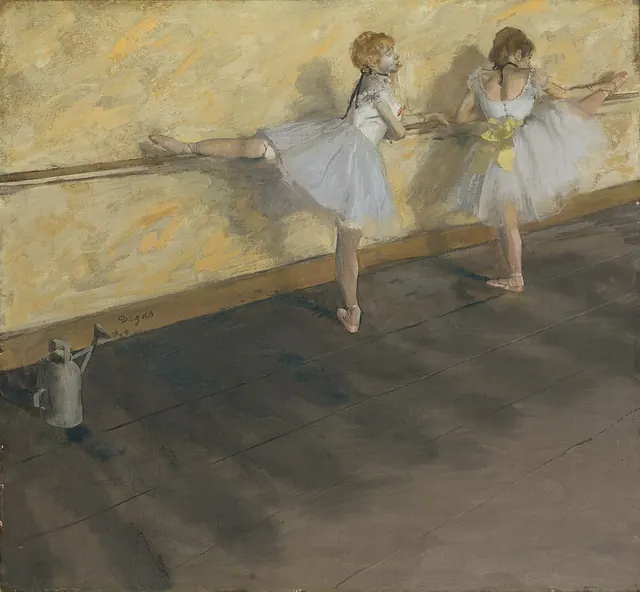

Treinar
uma regra de cada vez
Que escolha queres treinar?
A seguir
Sem olhos
Começar: Sem olhos →
Descrever com os sentidos
Abrir o percurso →
Como dás a sentir um lugar?
0 de 5 peças feitas
- 1Sem olhosEscreve uma cena sem nenhuma palavra de ver: nada de «ver», «olhar», cores ou luz.10 min de escrita
- 2O objeto banalPega num objeto banal ou feio e escreve sobre ele até o leitor o achar belo ou estranho.10 min de escrita
- 3A gavetaFaz o inventário de uma gaveta.8 min de escrita
- 4O quarto que falaDescreve um quarto (ou uma casa) que revele quem lá vive, sem dizeres quem é nem o que sente.12 min de escrita
- 5Duas horas, o mesmo lugarEscreve o mesmo lugar duas vezes, de manhã e à noite.12 min de escrita
Fazer falar sem explicar
Abrir o percurso →
O que fica por trás de uma fala?
0 de 5 peças feitas
- 1Duas vozes, nenhum nomeEscreve um diálogo de duas personagens sem dizer quem fala: nada de «disse», «perguntou», nem nomes antes das falas.12 min de escrita
- 2Só gestos e uma palavraEscreve uma cena tensa entre duas personagens sem falas: só gestos e movimentos.10 min de escrita
- 3A pergunta que ficaEscreve um diálogo em que nenhuma pergunta recebe resposta direta.10 min de escrita
- 4InterromperEscreve um diálogo em que ninguém acaba uma frase importante: as falas são cortadas ou abandonadas.10 min de escrita
- 5Uma fala, duas intençõesEscreve falas que dizem uma coisa e querem outra.12 min de escrita
Dar uma voz à personagem
Abrir o percurso →
Como reconheces uma personagem sem a descrever?
0 de 5 peças feitas
- 1Três em cinco minutosInventa três personagens: nome, idade, ofício, um medo, um desejo e uma contradição para cada uma.5 min de escrita
- 2Pelo que fazApresenta uma personagem só pelo que ela faz: nenhum adjetivo de carácter («corajosa», «tímida»), nenhum sentimento dito.10 min de escrita
- 3A entrevistaFaz dez perguntas a uma personagem tua.12 min de escrita
- 4Uma verdade difícilDá à tua personagem um pensamento verdadeiro e desconfortável, que ela nunca diria em voz alta.10 min de escrita
- 5A mesma coisa, duas vozesConta o mesmo acontecimento duas vezes, por duas pessoas muito diferentes (um avô e uma neta, uma vizinha e um polícia).12 min de escrita
Escolher a palavra e o ritmo
Abrir o percurso →
Quanto pesa uma palavra?
0 de 5 peças feitas
- 1Cópia lentaCopia à mão, devagar, um parágrafo de um grande escritor.12 min de escrita
- 2Dicionário, não sinónimosEscolhe a palavra exata entre três quase-sinónimos, com o dicionário aberto.10 min de escrita
- 3Verbo forteTroca cada verbo vago com complemento por um só verbo preciso: «andar depressa» por «apressar-se»; «dizer alto» por «bradar».10 min de escrita
- 4Sem «-mente»Retira os advérbios em «-mente»: troca cada um por um verbo mais preciso ou por um pormenor, ou corta-o.8 min de escrita
- 5Acelerar e travarEscreve uma cena em que o ritmo muda: frases curtas quando tudo acontece depressa, uma frase longa quando o tempo abranda.10 min de escrita
Escolher por onde começar
Abrir o percurso →
O que mostras primeiro, e pelos olhos de quem?
0 de 5 peças feitas
- 1Lista de substantivosEscreve dez substantivos concretos, com artigo («o sótão», «a paragem»): da tua memória ou inventados.12 min de escrita
- 2Começa mais tardeExperimenta cortar o primeiro parágrafo de um texto teu.8 min de escrita
- 3A meio da açãoComeça uma história com a ação já a decorrer.10 min de escrita
- 4A espingardaMostra no início um objeto que vai ser decisivo no fim.12 min de escrita
- 5Outro ponto de vistaConta uma cena conhecida pela personagem que estava calada, ou de quem os outros falam sempre.12 min de escrita
Rever com uma intenção
Abrir o percurso →
Onde tropeça o teu texto?
0 de 5 peças feitas
- 1Rascunho mau, de propósitoEscreve durante oito minutos sem parar, sem apagar, sem reler.8 min de escrita
- 2Ler em voz altaLê o teu texto em voz alta, devagar.8 min de escrita
- 3Matar a frase queridaNum texto teu, encontra a frase de que mais gostas e pergunta se serve a cena; se não serve, corta-a.6 min de escrita
- 4Cortar um quintoConta as palavras de um texto teu e corta pelo menos um quinto: em 100 palavras, ficam 80, sem mudar a história.10 min de escrita
- 5O teste do colegaDá o teu texto a ler sem explicar nada.6 min de escrita